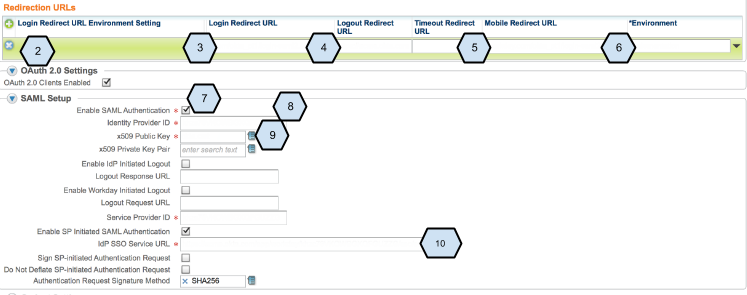
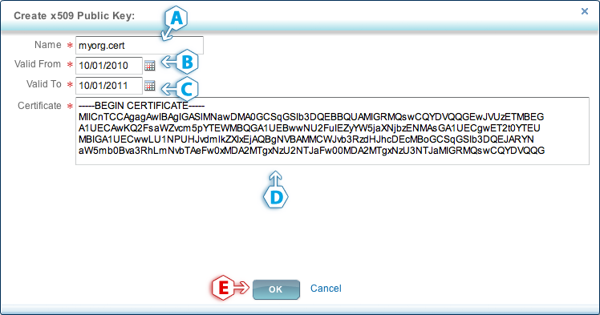

Enabling SAML will affect all users who use this application, which means that users will not be able to sign-in through their regular log-in page, if you enable SP initiated SSO. Users will only be able to access the app through the Okta service.
Backup URL
Workday provides a backup log-in url where users can sign-in using their normal username and password in the following format: [Your Workday URL]/login.flex?redirect=n
If you log into: https://acme.workday.com/login-auth.html, [Your Workday URL] is: https://acme.workday.com.
Go to the Edit Tenant Setup page. To get there, search for Edit Tenant Setup in the home screen search box, then click the Edit Tenant Setup link in the search results. The step numbers match the numbers in the screenshots shown below.
Click on the Single Sign On (right-most) tab
Click on the plus icon underneath Redirection URLs to add a row.
Input the following into Login Redirect URL:
[org URL]/login-saml2.flexInput the following into Mobile Redirect URL:
[org URL]/login-saml2.flexCopy and paste the following into Logout Redirect URL:
Sign into the Okta Admin dashboard to generate this value.Select an Environment.
Check Enable SAML Access.
Copy and paste the following into Identity Provider ID:
Sign into the Okta Admin dashboard to generate this value.Click the icon next to the x509 Public Key field, select Create from the left-hand column, and select Create x509 Certificate from the right-hand column. This will bring you to the Create x509 Certificate screen. Steps a–e are shown in the second screenshot below.
Enter a unique name for your certificate, for example, okta.cert.
Copy and paste the following into Valid From:Sign into the Okta Admin dashboard to generate this value.
Copy and paste the following into Valid To:Sign into the Okta Admin dashboard to generate this value.
Copy and paste the certificate listed below into the Certificate field:
Sign into the Okta Admin dashboard to generate this value.
Click OK to save your certificate, then select the Single Sign On tab again to return to the Single Sign-On Setup screen.
Copy and paste the following into idP SSO Service URL:
Sign into the Okta Admin dashboard to generate this value.Click OK to save your changes.

